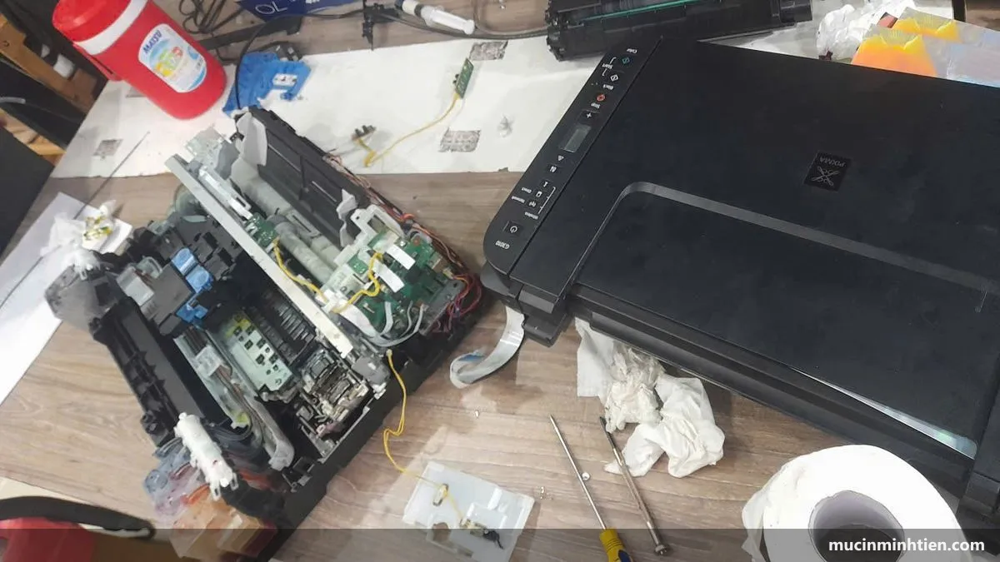
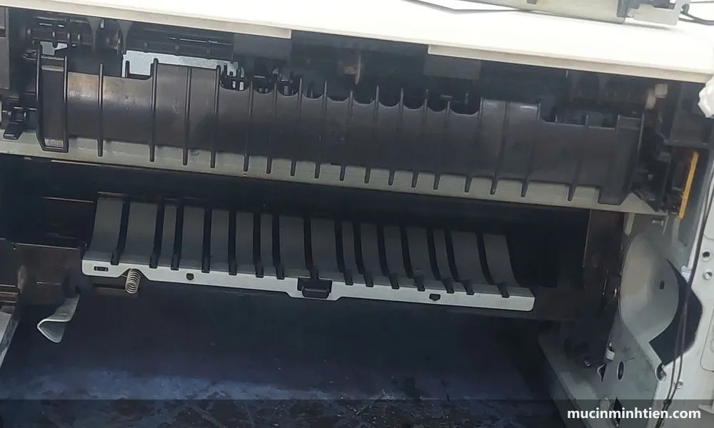
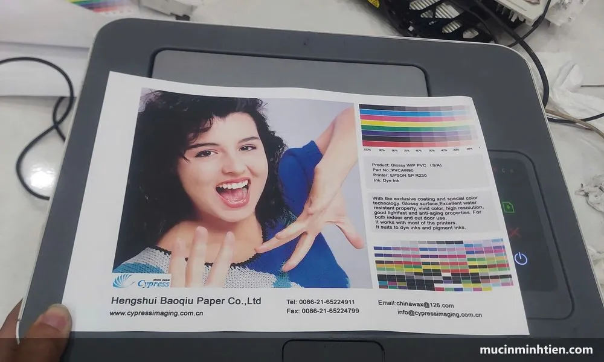

Dịch vụ sửa máy in & bơm mực tận nơi TP.HCM
Mực In Minh Tiến nhận sửa máy in và bơm mực tại nhà riêng, văn phòng trong TP.HCM với giá từ 80.000đ. Kỹ thuật viên có mặt trong 30–60 phút ở khu vực trung tâm, kiểm tra và báo giá trước khi làm, xử lý gọn tại chỗ và bảo hành theo từng hạng mục.

Dấu hiệu máy in cần kỹ thuật viên
Nhiều lỗi bạn hoàn toàn tự xử lý được tại nhà — chúng tôi có hẳn chuyên mục hướng dẫn sửa lỗi máy in cho việc đó. Hãy gọi thợ khi gặp các trường hợp dưới đây.
Bản in mờ, sọc dọc, lem mực
Đã lắc hộp mực mà bản in vẫn nhạt hoặc có vệt đen chạy dọc trang — thường do hết mực, trống từ xước hoặc gạt mực mòn. Xem thêm cách đọc vệt sọc để đoán bệnh.
Máy báo hết mực dù còn mực
Chip hộp mực đã đếm hết số trang định mức. Cần reset chip hoặc thay chip mới đúng mã, không phải thay cả hộp mực.
Kẹt giấy liên tục, không kéo giấy
Trục cuốn giấy chai cứng, bánh răng mòn hoặc có dị vật trong đường giấy. Cần tháo máy vệ sinh, không nên cố giật giấy ra.
Máy in phun bị mất màu, tắc đầu phun
Đã chạy Head Cleaning vài lần vẫn thiếu màu. Xem trước quy trình vệ sinh đầu phun Epson để tránh tốn mực vô ích.
Máy báo lỗi đèn, mã lỗi lạ
Đèn nháy theo chu kỳ, báo 5B00, Drum End Soon, Service Required… Mỗi mã là một nhóm nguyên nhân riêng, cần đọc đúng mới xử lý đúng.
Máy in kêu to, có mùi khét
Dấu hiệu cụm sấy hoặc bánh răng đang hỏng. Nên ngắt điện và gọi kỹ thuật viên ngay, tiếp tục in có thể làm hỏng nặng hơn.
5 điểm khác biệt của Mực In Minh Tiến
Có mặt trong 30–60 phút
Kho vật tư đặt tại 77 Bắc Hải, Phường Diên Hồng, đi các quận trung tâm nhanh. Nhận cả yêu cầu gấp trong ngày.
Báo giá trước, không phát sinh
Kiểm tra máy xong báo đúng hạng mục và số tiền. Khách đồng ý mới làm. Không có chuyện làm xong mới báo giá.
Vật tư có sẵn tại kho
Hơn 780 mã hộp mực, drum, gạt mực, trục từ, chip trong bảng giá công khai — không phải chờ đặt hàng.
Kỹ thuật viên nghề, không thay bừa
Chẩn đoán đúng bộ phận hỏng rồi mới đề xuất. Cái gì còn dùng được thì giữ lại, tiết kiệm cho khách.
Bảo hành rõ ràng bằng văn bản
Ghi rõ hạng mục và thời hạn trên phiếu. Lỗi lại đúng lỗi cũ trong thời hạn thì quay lại xử lý miễn phí.
Hỗ trợ sau khi xong việc
Máy phát sinh vấn đề nhỏ, gọi hoặc nhắn Zalo 0915 510 203 để được hướng dẫn xử lý từ xa trước khi phải gọi thợ.
Bảng giá dịch vụ tận nơi
Giá tham khảo cho khách lẻ tại TP.HCM, đã gồm công đến tận nơi trong khu vực nội thành. Giá cuối phụ thuộc dòng máy và tình trạng thực tế.
| Hạng mục | Áp dụng cho | Giá tham khảo |
|---|---|---|
| Nạp mực hộp mực laser | HP, Canon, Brother (12A, 85A, 337, TN-2380…) | 80.000 – 150.000 đ |
| Bơm mực máy in phun | Epson, Canon dòng phun | từ 60.000 đ/màu |
| Thay trống từ (drum) | Máy in laser HP, Canon, Brother | từ 120.000 đ |
| Thay gạt mực, trục từ, chip | Tùy dòng máy | Theo bảng giá linh kiện |
| Vệ sinh máy in tận nơi | Tất cả các dòng | từ 100.000 đ |
| Xử lý kẹt giấy, không kéo giấy | Máy in laser và phun | từ 150.000 đ |
| Hợp đồng bảo trì văn phòng | Từ 3 máy trở lên | Báo giá theo số máy |
Cần giá hộp mực và linh kiện rời theo từng mã máy? Xem bảng giá đầy đủ 773 mã sản phẩm hoặc danh mục sản phẩm bán lẻ.
5 bước làm việc

Tiếp nhận yêu cầu
Gọi hoặc nhắn Zalo mô tả máy đang bị gì. Chụp thêm ảnh bản in lỗi giúp chẩn đoán nhanh hơn.
Tư vấn sơ bộ qua điện thoại
Nhiều lỗi xử lý được ngay qua hướng dẫn từ xa mà không cần gọi thợ — chúng tôi nói thẳng khi rơi vào trường hợp đó.
Kỹ thuật viên đến và kiểm tra
Kiểm tra máy, xác định đúng bộ phận hỏng, báo giá từng hạng mục trước khi động vào máy.
Thực hiện tại chỗ
Nạp mực, thay linh kiện, vệ sinh máy. In thử và đưa khách xem bản in trước khi kết thúc.
Bàn giao và bảo hành
Ghi phiếu rõ hạng mục đã làm và thời hạn bảo hành. Lưu số máy để lần sau hỗ trợ nhanh hơn.
Hãng và dòng máy nhận sửa

HP
LaserJet P1102, M12a, M15w, 107a, 107w, 135a, 135w, M402, M404 và các dòng đa năng MFP. Xem cách reset máy in HP và xử lý HP 107a in mờ.
Canon
LBP 2900, 3300, 6030, 6230, MF3010, MF244, dòng phun G1010–G3010, iX6770. Xem xử lý lỗi 5B00 và Canon 2900 không nhận hộp mực, Canon 2900 kéo nhiều tờ giấy.
Brother
HL-L2321D, HL-L2361DN, DCP-L2520D, MFC-L2701DW và các dòng TN-2380. Xem lỗi Drum End Soon.
Epson
L1110, L3110, L3150, L3210, L3250, L5190, L8050. Xem lỗi 2 đèn đỏ và tràn bộ đếm mực thải.
Máy photocopy
Ricoh, Toshiba, Sharp dòng văn phòng: đổ mực, thay trống, thay gạt, vệ sinh cụm sấy.
Máy in bill, máy fax
Máy in nhiệt khổ 58mm, 80mm và các dòng fax còn dùng ruy băng — có sẵn vật tư thay thế.
Nhận sửa máy in tận nơi tại TP.HCM
Xuất phát từ kho 77 Bắc Hải, Phường Diên Hồng, TP.HCM, chúng tôi phục vụ nhanh nhất ở khu vực trung tâm và các phường lân cận. Chi tiết dịch vụ nạp mực xem tại trang nạp mực máy in tận nơi TP.HCM.
Câu hỏi thường gặp về dịch vụ máy in
Sửa máy in tận nơi tại TP.HCM giá bao nhiêu?
Gọi bao lâu thì kỹ thuật viên có mặt?
Có sửa được ngay tại chỗ không hay phải mang máy về?
Dịch vụ có bảo hành không?
Văn phòng nhiều máy in có ký hợp đồng bảo trì được không?
Nên nạp mực hay thay hộp mực mới?
Thông tin liên hệ
Mực In Minh Tiến
Địa chỉ: 77 Bắc Hải, Phường Diên Hồng, Quận 10 cũ, TP. Hồ Chí Minh
Hotline / Zalo: 0915 510 203
Email: tinhocbts@gmail.com
Giờ làm việc: Thứ 2 – Thứ 6: 8:00–18:00 · Thứ 7: 8:00–17:00